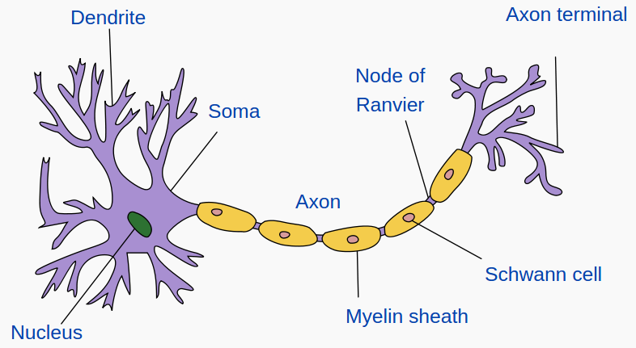
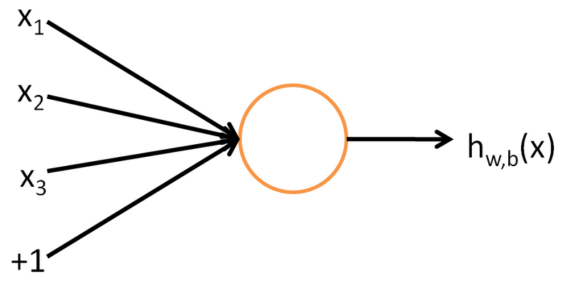
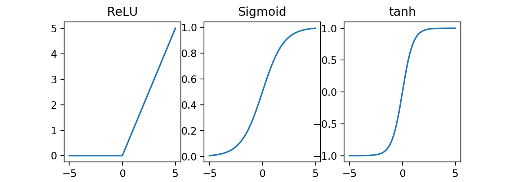
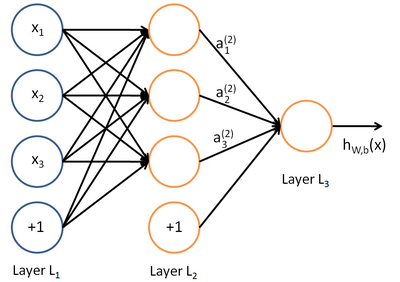

25. Neural networks#
Neural networks are a collection of models that have gained a lot of popularity recently. They are motivated by the way neurons connect and interact in animal brains. Even though they provide a very superficial model of brain neurons, these models are very flexible and can be used to model many different types of data. They also form the basis to construct large language models (LLM) that are currently of great interest. One needs to keep in mind, however, that most neural network models have a lot of parameters. As a result, a lot of data is required to estimate these parameters properly. They are therefore not appropriate in every situation.
{kind=link}

Fig. 25.1 Illustration of a brain neuron.#
25.1. Biological motivation#
The human brain is estimated to contain approximately 86 billion neurons. Each neuron receives signals from other neurons via its many dendrites (input) and has a single axon (output). Neurons make on average 7,000 synaptic connections. They interact via an electrochemical process. When a neuron fires, it starts a chain reaction that propagates information. Some synapses are known to be excitatory, while others are inhibitory. Our brain learns by changing the strengths of the connections between neurons or by adding or removing such connections. As of today, relating brain networks to functions remains a very challenging problem, and a very active area of research.
25.2. Mathematical formulation#
Neural networks consist of many layers of neurons that are connected together. Each neuron comes with parameters that can be trained to compute a particular quantity. In practice, these parameters are trained to minimize some loss function. We begin by examining a single neuron.
25.2.1. Single neuron#
The basic unit of computation in a neural network is a neuron.
{kind=link}

Fig. 25.2 Illustration of a neuron with three inputs and one output. The “+1” represents the bias term.#
Each neural has a given number of inputs and one output. The output of a neuron \(h_{w,b}\) is an affine combination of the input, i.e., a linear combination of the input with a bias/constant term, followed by an activation function \(f\). For example, the neuron in the above figure computes:
Here, \(w_1, w_2, w_3\) and \(b\) are weights/parameters that are trainable. We call \(b\) the bias term. Popular choice for the activation function include:
The rectified linear unit (ReLU) \(f(x) = \max(0,x)\).
The sigmoid function \(f(x) = \frac{1}{1+e^{-x}}\) that we encountered in Logistic regression.
The hyperbolic tangent \(f(x) = \tanh(x) = \frac{e^x-e^{-x}}{e^x + e^{-x}}\).
Notice how each of these functions induces an active/inactive behavior: the neuron is “active” when \(f(x) \approx 1\) and “inactive” when \(f(x) \approx 0\) for ReLU/Sigmoid or \(f(x) \approx -1\) for \(\tanh\):
{kind=link}

As a result, the neuron is “active” when the affine combination it computes is a large positive number, and “inactive” when the combination is a large negative number. As we train a neural network, the weights change to detect certain features of the data. In practice, it is difficult and often impossible to understand what each neuron is exactly doing/looking for.
25.2.2. General neural networks#
A neural networks model is obtained by hooking together many neurons so that the output of one neuron becomes the input of another neuron.
{kind=link}

Fig. 25.3 Example of a neural network with three inputs, one hidden layer with three neurons, and one output.#
We call the first layer on the left the input layer and the last layer on the right the output layer. The other layers are called hidden layers.
To each edge on the figure representing a neural network corresponds a weight that is used to perform calculations. Let \(W^{(l)}_{ij}\) denote the weight associated with the connection between unit \(j\) in layer \(l\) and unit \(i\) in layer \(l+1\). Moreover, let \(b_i^{(l)}\) be the bias term associated with unit \(i\) in layer \(l\). For instance, in the above example, the neural network has parameters \((W,b) = (W^{(1)}, b^{(1)}, W^{(2)}, b^{(2)})\), where
The model thus has \(16\) parameters.
Note
Notice how the number of parameters increases rapidely as we add more layers and neurons to a neural network.
To simplify notation, let us denote by \(a_i^{(l)}\) the output of unit \(i\) in layer \(l\). By convention, we set \(a_i^{(1)} = x_i\) for the input. With that notation, the neural network in the above figure performs the following calculation:
Given an activation function \(f\), we extend its action elementwise to vectors:
With that notation, we can nicely re-write the calculation performed by the neural network using matrix-vector products
Therefore, to go from layer \(l\) to layer \(l+1\), one needs to:
Multiply the \(a^{(l)}\) vector by the matrix \(W^{(l)}\).
Add the bias term \(b^{(l)}\).
Apply the activation function entrywise to the resulting vector.
This general process can be performed to compute the output of any neural network. By using matrix-vector operations to perform calculations, we can take advantage of fast linear algebra routines to quickly perform calculations in our network.
The above process for evaluating the output of a neural network is called forward propagation (we “propagate” the input through the network).
Note
Notice how neural networks are a parametric family of functions, i.e., a set of functions determined by a set of parameters. We can therefore optimize over these parameters for the function to match a given set of inputs/outputs.
It is natural to ask what kind of functions can be approximated by neural networks. Several approximation theorems show that neural networks with certain structure can be used to approximate any continuous function to any desired degree of accuracy. These theorems, however, only provide the existence of such neural networks. They do not provide any guidance to construct them.
25.3. Activation functions#
Different activation functions can be used in each layer of a neural network. In practice, it is common to use ReLU activation in the hidden layers, and to end with a sigmoid or tanh activation in the last layer. No activation (linear layer) can also be used in the last layer to obtain a bigger range of values.
Warning
When training a neural network, it is important to make sure the data is scaled according to the activation function used in the last layer. For example, if the network ends with a sigmoid activation, then the output data need to take values in the interval \((0,1)\).
25.4. Training neural networks#
Suppose we have
A neural network with \(s_l\) neurons in layer \(l\) (\(l=1,\dots, n_l\)).
Observations \((x^{(1)}, y^{(1)}) ,\dots, (x^{(n)}, y^{(n)}) \in \mathbb{R}^{s_1} \times \mathbb{R}^{s_{n_l}}\).
We would like to choose the weights \(W^{(l)}\) and \(b^{(l)}\) in some optimal way for all \(l = 1, \dots, n_l\).
Assuming our output is continuous, consider the following squared error loss for one sample:
The mean squared error loss for the whole dataset is obtained by averaging this error over the dataset. In practice, we also often include an \(\ell_2\) type penalty to make the optimization process more stable during training:
If the output is discrete, one needs to replace the square loss function by a different loss function (e.g., cross-entropy) – see Analyzing categorical data.
Note
The loss function \(J(W,b)\) is typically not convex. Finding its global minimum is generally very difficult or impossible. However, in practice, finding a local minimum of the loss is usually enough to obtain a good model.
Variants of the gradient descent algorithm (see Lab 3: Gradient descent) are typically used to train neural networks.
25.4.1. Initializing gradient descent#
To start the gradient descent process, we need an initial choice for \(W_{ij}^{(l)}\) and \(b_i^{(l)}\) for each \(l\). If we initialize all the parameters to \(0\), then the parameters remain constant over the layers because of the symmetry of the problem. In practice, we usually initialize the parameters to a small constant at random (say, using \(N(0,\epsilon^2)\) for \(\epsilon = 0.01\)).
25.4.2. Computing the gradient: the backpropagation algorithm#
We update the parameters using gradient descent as follows:
Here \(\alpha > 0\) is a parameter (the learning rate). The derivatives can be recursively computed using the standard chain rule from calculus. As we compute the derivatives via the chain rule, we move the right to left into the network.The resulting process is called the backpropagation algorithm, or backprop.
25.4.3. Stochastic gradient descent and minibatches#
When training the neural network, the loss function to minimize is typically the average error on some training dataset:
for some loss function \(L\) and some vector of parameters \(\theta\). As a result, the gradient also takes the form of an average
Thinking of data as being provided at random from some data generating mechanism, we can think of \(\nabla_\theta J(\theta)\) as an expected value. As a consequence, any average of the form
approximates the desired gradient, for any large enough subset of random samples \((x^{({t_1})}, y^{({t_1})}), \dots, (x^{({t_m})}, y^{({t_m})})\) and \(1 \leq m < n\) (see the Law of large numbere).
When performing gradient descent, one typically does not need the exact value of the gradient. Indeed, recall that the gradient is the local direction of steepest descent. It is not necessarily the optimal direction to move into in order to find a minima of the loss function. In practice, replacing the gradient by a “good-enough” approximation of the gradient works. This becomes particularly interesting if a cheap approximation of the gradient is available. In stochastic gradient descent, we approximate the gradient using a subset of the training data at each step of the gradient descent algorithm.
A typical approach involves dividing the dataset into minibatches, i.e., non-overlapping subsets of the training data of a given size. The gradient descent then proceeds as follows:
Pick a minibatch.
Approximate the gradient using that minibatch.
Update the parameters of the model.
Repeat Steps 1 to 3 until the whole dataset has been exhausted.
A complete pass through the dataset is called an epoch.
In theory, one would keep iterating the above process until convergence. In practice, the optimization process is often stopped after a given number of epochs.
25.4.4. The Adam optimizer#
The Adaptive Moment Estimation (Adam) is another refined version of gradient descent that is often used to train neural networks. It has two main ingredients: momentum and Root Mean Square Propagation (RMSProp)
Assume the parameters to estimate are \(\theta = \{\theta_1, \dots, \theta_m\}\). Let \(\theta^{(t)}\) be the \(t\)-th estimate of \(\theta\) and let \(L(\cdot)\) be the loss function of the problem.
The momentum is defined by:
where \(\beta_1\) is a parameter (usually set to \(0.9\)). Observe that the momentum is a combination of the new gradient and of the previous gradient. Replacing the gradient by this expression helps smoothing out noisy gradients and provides a more stable path for optimization.
The RMSProp is defined by:
where \(\beta_2\) is another parameter (usually set to \(0.99\)). The RMSProp term adjusts the learning rate depending on the magnitude of the gradient (large gradient: smaller learning rate, small gradient: larger learning rate). This prevents overshooting and slow convergence.
Combining these two ideas, the update in the Adam optimizer (ignoring the bias correction) is given by
where \(\alpha > 0\) is the learning rate and \(\epsilon > 0\) is a small number (used to prevent division by \(0\)).